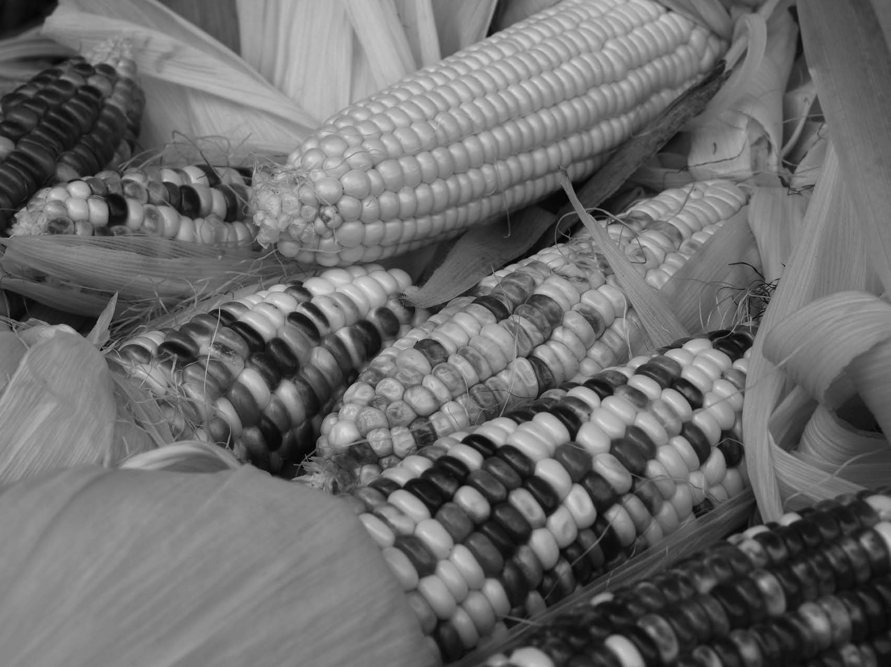
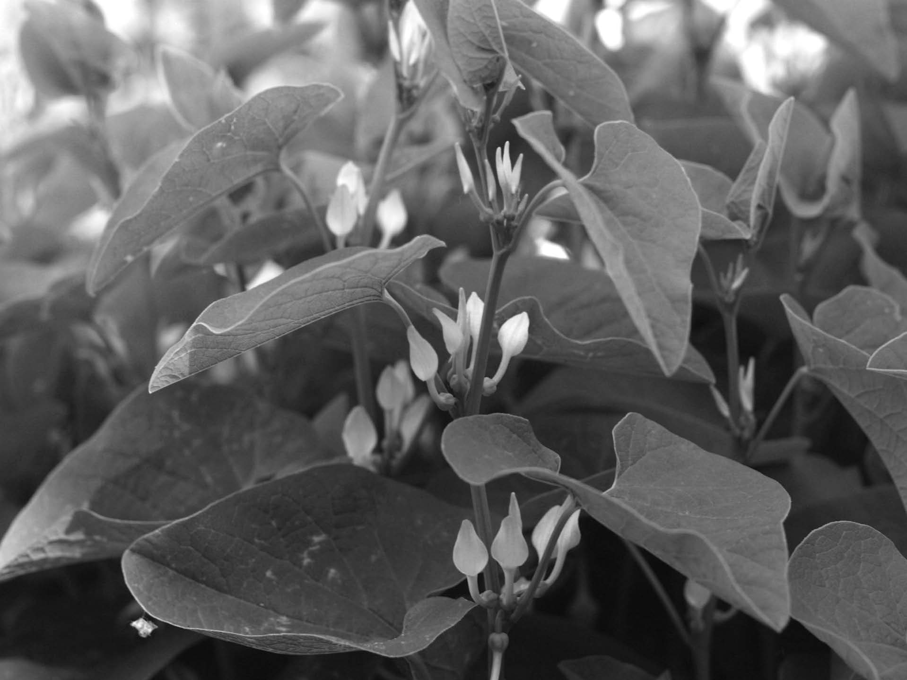
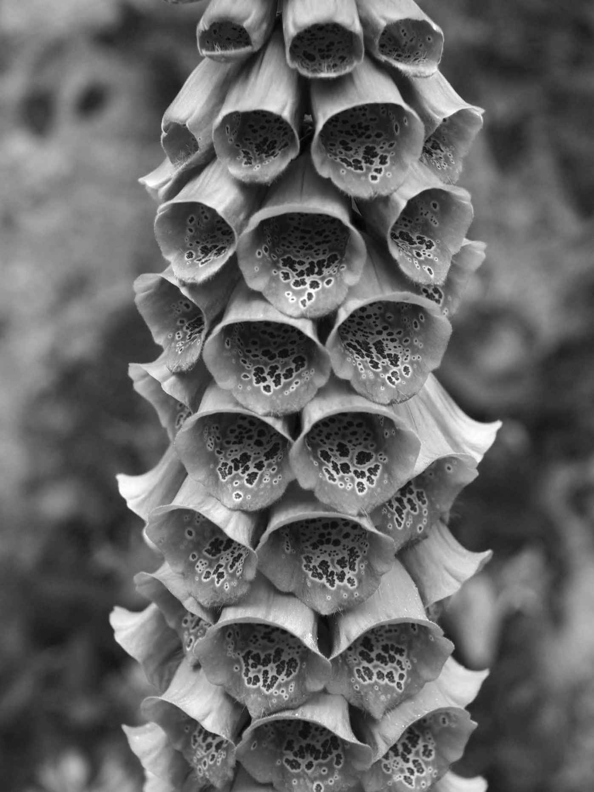

据说，保护植物有三类宽泛的原因，可总结为3S、3P或4E。具体来说就是明智/利己/精神，或者务实/实用/哲学，或者生态/经济/伦理/美学（几乎都是这样的）。毫无疑问，植物（以及通常而言的生物学）提高了我们的生活质量。它们美丽迷人，对它们的栽培也被许多人认为具有放松心情的效果。植物在艺术以及景观设计中的作用不容忽视，但这些都是植物的个体方面，属于精神/哲学/美学的范畴。
那么，植物的重要性还有其他两大类原因。一方面，大型生态服务通常可分为四大主题：供给（如食物或淡水）、调节（如固碳）、支持（如提供传粉者）以及最后的文化（如徒步旅行）。在某种程度上，这些服务并不局限于特定的物种，因此我们可以认为，只要树木在生长，究竟是哪个树种在生长和吸收二氧化碳并不重要。据计算，这些生态系统服务的价值约为每年330 000亿美元。这是一项奇怪而乏味的计算，因为如果你的钱包里真的有330 000亿美元，你要到哪里去购买这些生态系统服务呢？此外，全球每年的国民生产总值只有18 000亿美元，所以即便有人出售生态系统服务，我们也无力承担。如果某件事物不能购买，那么它究竟是珍贵无价还是毫无价值呢？这也许解释了过去几个世纪以来人类对待生物学的傲慢态度。
保护我们的生物遗产的其他原因就是物种特异性。这些正是从草本植物中提取或是以其他方式直接获得的商品和资源。其中就包括了欧洲红豆杉这样的植物，在治疗乳腺癌的泰索帝合成药物中，它为我们提供了Bacattin Ⅲ。
思考植物对人类的贡献可能是最近几十年来人类才会提出的问题，因为我们当中有一部分人正在逐渐远离人类充分利用的植物。在某种简单的层面上，植物已经并将继续为我们做出一切贡献，因为它们（迄今为止）利用太阳能制造一系列令人惊叹的化学物质的能力十分独特，其中有些物质是全英国的化学家都无法合成的。
在另一种非常具有生物性的层面上，植物创造了我们目前正在与至少150万种其他物种共同存活的栖息地。然而，智人与其他物种的区别之一就在于人类能够增加所在栖息地的承载能力。有人提出，从长期来看，可持续农业只能养活15亿人，但从中期来看，到2050年预计最多需要养活9.5亿人。如果没有农业，地球只能支持大约3 000万狩猎采集者。这是一个发人深省（或者仅仅是荒唐）的数字，因为其他64.7亿人无处可去。为了养活当前的人口，我们正在耕种地球土地总面积的四分之一，并且我们正在以这样或那样的方式消耗所有光合作用40%的产物。人们极为关注的是，如果我们不得不扩大种植面积，那么有许多其他物种将被赶出目前的栖息地。
农业的起源并不明确。直到20世纪末，传统观点一直认为人类于大约8 000年前在底格里斯河和幼发拉底河之间的地区将草类驯化，该地区因而被称为新月沃地。人们认为这里曾经种植了多达八种作物：一粒小麦、二粒小麦、大麦、扁豆、豌豆、亚麻、苦野豌豆和鹰嘴豆，以及随后出现的黄豆。大约与此同时，水稻在中国得到驯化，土豆在南美得到培育。在那之后，世界各地出现了更多的独立驯化中心，包括在中美洲地区用墨西哥类蜀黍培育出玉米。到底是什么刺激了人类同步但不协调地采用这种农业生活方式呢？被称为“新仙女木事件”的气候异常事件在传统上被认为是农业发展的催化剂。这种简单的观点目前正在受到挑战。

图18 甜玉米现在是三种主要作物之一
现在人们认为，在上一次冰期结束时（大约14 500年前），中东或许还有其他地区的气温升高到了与当前接近的数值。大约13 000年前，气温继而迅速恢复到冰河时期的数值。这就是所谓的波令-阿勒罗德间冰期（Bølling-Allerød Interval）。接着便是大约12 900 ～ 11 600年前寒冷但干燥的新仙女木事件，在这一事件结束时，气温上升到远高于冰期的温度，冰川最终退缩。在新仙女木事件结束之后，气候罕见地逐年稳定，因此人类不再以15 ～ 50人为一组的团队四处移动，他们开始住在逐渐由石头建造的定居点中。这些史前人被称为纳图夫人，他们生活在如今的以色列、约旦、叙利亚和黎巴嫩地区。随着气温的升高，橄榄、开心果、小麦和大麦开始在这一地区生长。这些植物已预先适应了这些新环境。
现在大约有60处地点曾经有纳图夫人居住过，但是很少有直接证据表明他们曾经利用过哪些植物。其中一处定居点位于叙利亚幼发拉底河流域的阿布胡赖拉。在新仙女木事件发生前后，这里留下了两组遗址。有人认为，正是寒冷干燥的天气迫使在这片地区居住的人类不得不种植在野外愈发稀少的谷物。人们在这处定居点的遗址中发现了九颗饱满的黑麦种子。部分研究人员表示，这很难构成完整理论的坚实基础，尤其是因为黑麦还未在其他地区发现，并且几千年来都没有出现过。这可能是因为，新仙女木事件结束时，二氧化碳水平增加了50%，这通过使农业可进行光合作用而发挥了作用。
关于智人对植物的控制，人们目前有一些共识。我们知道狩猎采集者曾食用野生植物的果实、根、种子和坚果。这其中就包括草籽。2009年，有证据表明，在105 000年前，人类曾在莫桑比克使用石器碾碎谷物，尤其是高粱。这一证据因工具中存在造粉体而得到了支撑。造粉体是植物制造和储存淀粉的细胞器。淀粉沉积的模式和造粉体的大小通常具有物种特异性。此外，栽培品种通常具有更大的造粉体。野生辣椒的造粉体长0.006毫米，而栽培品种的造粉体长0.02毫米。造粉体非常实用，因为它们能抵抗腐烂，我们不仅在早期的厨房用具中发现了造粉体，而且在沉积物中也发现了它。它们现在已经被用于推断南瓜、木薯和辣椒在美国完成驯化的年代。
奥哈洛二号遗址位于加利利的西南海岸，这里在23 000年前曾有人居住。人们在这处遗址中发现了橡子、开心果、野生橄榄、大量的小麦和大麦以及其他等超过90 000份植物残迹，但没有哪种植物看起来像是栽培品种，也没有证据表明谷物曾经被碾碎。
就这个故事而言，重要的是要考虑栽培和驯化的含义。前者仅仅是有意种植或保护野生植物。生长是从种子或插枝等繁殖体开始的，而保护则是因为人类需要某种物质而对植物进行保留和培育。我们通常很难证明野生植物的栽培。另一方面，驯化是很明显的。驯化有许多定义，但这些定义都包括一种永久的物理和基因元素的改变，从而改良植物使其更适合人类的需要。
这些改良被称为驯化综合特征。有些特征显然对种植者更有利。这些特征包括：紧密的生长；令植物更具适应力；植物成熟的同时可进行一次收获；季节性开花和/或发芽的缺失可实现一年中不同时间的播种；更大的谷粒以及更薄的种皮以增加适口性，并使得磨铣等加工程序更加容易。风味和营养价值的增加是消费者希望看到的特征，而当农业开始发展时，种植者和消费者就是同一批人（在世界上许多地方至今仍是如此）。
对于一些作物来说，它们在驯化过程中需要克服非常特殊的障碍。就无花果而言，在我们所食用的“果实”能够正常发育之前，花朵需要借由一种特定的小蜂来进行传粉。无花果的花被封闭在隐头花序中（也就是我们所食用的无花果的肉质部分，严格地说这不是真正的果实）。我们在蔬菜水果店买到的无花果是一种变异品种，它可以在无须传粉的情况下发育出肉质的隐头花序。这些单性结实的品种是非常古老的。在约旦的新石器村落吉甲出土的无花果残迹展示了一颗这种古老的单性结实果实中的非凡细节，这些果实的年代可准确追溯到11 400年前。
令种植者感到沮丧的一种特征就是植物成熟后容易掉籽。种植者想让植物一直把种子和果实挂在上面，直到他准备好收割为止。这意味着驯化品种的种子不具有平滑的脱落伤口，而具有锯齿状的伤痕或裂缝。这对古植物学家来说是一种非常有用的特性，因为人们可以在非常古老的种子残迹中发现这种特性。土耳其奈瓦里·科里定居点的遗迹中就发现了这种种子。这处遗址中发现的种子是在10 500年前收获的，它们具有锯齿状的脱落层，这表明种子并非自然脱落，而是在收获过程中被撕掉的。这是有关植物驯化最早的直接证据。
然而，我们不应假定从野生谷物采集到选育品种种植的转变发生在一年之内。同样来自奈瓦里·科里的证据充分表明，野生植物和驯化植物是一起生长的，也许是因为种植者无法阻止部分野生种子在收获前掉落，从而使它们年复一年地保存在土壤种子库中。现在人们普遍认为，驯化之前要经过多年的耕种，因此，从狩猎采集社会到农业社会的转变过程可能涉及四个阶段。第一阶段是狩猎采集者以小团体的形式四处迁徙，他们的移动受食物供应和天气的影响，而这两种条件可能很不稳定。这些流浪者可能居住在洞穴里，我们已经在这些洞穴里发现了他们日常生活的碎片。在高加索山脉的洞穴中，我们发现了1 000多份亚麻纤维。36 000年前，曾经有人在这处定居点活动。这些纤维似乎经过染色，尽管对亚麻进行染色是非常困难的。
众所周知，尼安德特人和后来的智人已经认识到，利用火可以获得极大的优势。小面积的选择性燃烧促进了柔软、可口的植被的再生。木质组织几乎不可能被消化，但食草动物消化纤维素不成问题。这意味着，再生燃烧区域可以吸引动物，而在未燃烧的灌木丛中持长矛等待着的人类很容易将这些动物抓走。
采用农业生活方式的第二阶段将涉及狩猎、采集和野生植物种植的结合。这样，人类就能学习并理解种植技术。
在学会了如何种植植物之后，早期的种植者通过寻找前文中介绍过的驯化综合特征，得以将注意力转移到更好植物的选择上。因此，这种转变过程的第三阶段就包括减少对狩猎和采集的依赖，以及更多地依赖于农田生产。这些农田本将包含越来越多的植物和动物驯化品种。奥哈洛二号遗址的证据表明，在10 000年前，只有10%的栽培植物会表现出驯化综合特征。这一比例在8 500年前增长到36%，而在7 500年前增长到了64%。同时越来越明显的是，不同的作物在以不同的速度被驯化，这种驯化速度不是恒定的，而是会被突然的活动打断，而且不同的作物也在以不同的方式被改变。
现在人们认为，尽管中国人早在12 000年前就开始食用水稻，但事实上，他们最早开始驯化的谷物是大约10 000年前的小米。在中国西部的成都平原，小米在4 000年前曾是人类的主食，人们用它来制作面粉、粥和啤酒。来自中国的证据表明，水稻的驯化是一个缓慢的过程。人们仅在一处定居点就检查了大约24 000份植物，其中就包括2 600份水稻小穗。虽然水稻的驯化可能在10 000年就已经开始了，但直到6 900年前，水稻也才占据了栽培植物的8%，而且其中只有27.4%是驯化水稻。到6 600年前时，水稻占据了所有栽培植株的24%，但只有38.8%的水稻被驯化。随着种植面积的扩大，为了容纳农田而发生的环境变化程度也不断扩大。在长江下游地区，人们大约在7 700年前清理了桤木，而通过堤岸对水位进行了150年之久的管控，直到大约7 500前发生了一次灾难性的洪水。
智人进化成依赖农业的物种的最终阶段涉及耕地面积的增加以及农业生活方式的传播。现在人们认为，尽管南瓜、花生和木薯生长在10 000年前的安第斯山脉，但它们最初是在低地的热带森林中发生驯化的。这方面的证据来自对野生和栽培物种的基因组研究。西亚马孙河流域土方工程的证据还表明，这里不仅可能是南瓜、花生和木薯的驯化中心，还可能是辣椒、黄豆、橡胶、烟草和可可的驯化地点。
人们认为，玉米曾经在7 000—5 000年前生长在安第斯山脉。然而，我们不知道这些植物与现代玉米培育的祖先原始墨西哥类蜀黍有何不同。虽然现代小麦和大麦似乎都是在不止一处地点培育成的，也有不止一个原始杂交种或选择，但现代玉米都来自同一个驯化事件，这一事件发生在9 000—6 000年前之间。这种转变令人难以想象。例如，墨西哥类蜀黍的最大谷粒数约为12粒，而一个玉米棒子现在包含多达500甚至更多的玉米粒，这是由于人们不断选择谷粒更多的植物，并且只对其进行种植和杂交。
人们现在认为，最早的独立耕种行为发生在24个以上的地区，其中13个地区的主要作物是谷物。根据经验，增加种子大小和不易碎的种穗是人们最早开始研究的两种驯化综合特征。对于西葫芦来说，人们不仅选择了更大的种子，还选择了较粗的茎和较薄的果皮。
在这二十多个驯化中心出现之后，随着人类的迁徙，农业开始在世界各地散播开来。有时人类迁徙时会带上植物。例如，人们在美国10 000年前的定居点发现了葫芦（Lagenaria siceraria ）。有人认为葫芦是由古印第安人可能经过亚洲海岸而非横跨大西洋带到美国的。现有良好证据表明，欧洲早期的种植者是移民，教会了土著居民如何耕种。现在还不清楚这些移民来自哪里，但他们携带植物的栽培品种使其远离亲本种，如此阻止了这些品种与亲本发生回交所造成的选择遗传稀释，因而无意中加快了驯化的进程。实际上，他们正在分离基因库。
人类在驯化食用植物的同时，也从植物中提取其他的自然资源。我们在前文中已经提到过橡胶和纤维，但在建造住所并为其供暖时，人们也会利用树木的木材和树叶。然而，植物的另一个主要使用领域是药物。
很难说早期的原始人类是在何时以何种方式开始意识到植物的治疗能力的。同样，洞穴遗址中的碎片给了我们一些线索。人们在伊拉克北部的洞穴中发现了大量的花粉粒，据推测这些花粉粒来自洞穴居民所利用的植物，这些居住者有可能是尼安德特人、智人或者是最近发现的混血人种。人们已经鉴定出，大约90%的花粉粒来自因药用特性而仍在该地区被人类利用的植物物种。这些属性的发现过程仍是人们猜测的主题，但有以下几种可能性。
我们无法排除这些植物特性的发现是简单偶然观察的机缘巧合；当然，人们就是这样发现有毒植物的。观察动物可能使人们对植物产生好奇。獴、马和考拉分别会食用紫锥菊、柳树和茶树。这些植物都已被证明具有益处。各种各样的奇怪想法对人类知识构成做了一小部分贡献。而在知识构成中处于首发位置的必然有形象学说，这一学说的基础在于，如果某种植物的一部分类似于身体的一部分，那么这种植物就应用来治疗该身体部分的疾病。只有用于促进分娩的马兜铃（Aristolochia ）和用于治疗睾丸癌的北美桃儿七（Podophyllum ）被认定为这种迷人的危险思想的伪证据。

图19 几个世纪以来，马兜铃一直用于诱导分娩
中药可能是最为广泛的草药使用形式。最古老的印刷版草药志是4 000年前在中国印刷的《本草纲目》 [4] 。这本著作中推荐的许多注射剂和酊剂至今仍在中国使用，而且仍然有效。科学问题之一就是探索这些配制品中的活性成分，因为配制品通常含有不止一种植物，所以其活性成分可能是多种成分共同作用的综合结果。中国目前正在进行的一项大型项目旨在发现中药中使用的所有6 000种植物的有效成分。
中国人使用麻黄（Ephedra ）控制支气管哮喘的历史已有3 000多年，而麻黄在当今仍然是儿童咳嗽药中的常见成分。欧洲麻醉师也采用麻黄来预防患者在手术中发生咳嗽——这可是个坏消息。他们也会在患者苏醒过来时使用麻黄，因为麻黄可以模拟肾上腺素的作用，从而使患者感到精神振奋、可以准备回家。应当指出的是，国际奥林匹克委员会和其他机构将麻黄碱及其衍生物视为兴奋剂。黄花蒿（Artemisia annua ）在疟疾治疗和预防中的应用直接来源于中草药，但其作用方式仍不清楚。多年来，木蓝（Indigofera ）的提取物一直被用于治疗“坏血”，现在在西方也用于治疗白血病。
在中国，使用银杏（Ginkgo biloba ）治疗循环系统问题（尤其是与大脑有关的问题）仍有待证实，但作者的母亲发现，在全科医生的处方均无效的情况下，银杏对改善她的手脚血液循环是非常有效的。然而，她的心脏正依靠洋地黄毒苷的非凡能力来调节和加强心跳。19世纪，伯明翰还没有如今这么大规模，而板球运动也还未被创造出来，在埃德巴斯顿村庄工作的威瑟林医生首次证明了毛地黄（Digitalis purpurea ）、新近的狭叶毛地黄（Digitalis lanata ）中的地高辛以及随后的洋地黄毒苷的最初用途。他从什罗浦郡一种由20种草药组成的吉卜赛酊剂中偶然得到这个想法，这种酊剂据称对多种疾病有效。经过排除法，毛地黄成了当时的英雄。
随着科学方法的出现，人们对植物提取物的治疗价值进行了更为严格的检验。问题就在于找到可供验证想法的志愿者。在16世纪，如果监狱中的囚犯允许医生在其身上观察各种治疗的影响，那么类似于假释委员会的早期组织便能让囚犯提前获释。提前释放是有保证的——但通常被放在了棺材里。人们便是用这种方法发现了菟葵的毒性。
临床试验如今受到了更严格的监控，新治疗方案的寻找也更加系统化。然而，地方性知识的价值仍然不可估量。紫杉醇的发现便是北美原住民与美国国家癌症研究所分享传统医学知识的直接结果。从短叶红豆杉的树皮中提取紫杉醇并在小鼠中证明其治疗卵巢癌的潜力后，一家商业制药公司便开始从事相关研究。他们面临的第一个问题就是获得足够的紫杉醇以进行研究。合成紫杉醇是不可能的，所以唯一的选择就是从树皮中收获这种物质。尽管这帮助了公司，最终也帮助了病人，但对树木却毫无帮助。这种方式永远无法保证紫杉醇的可持续供应。
在欧洲，研究人员无法获取短叶红豆杉的树木（因为它们属于美国），所以他们必须找到一种替代的生产系统。最终，人们发现欧洲红豆杉的叶子中含有Bacattin Ⅲ，这种物质可以转变成具有医疗功效的紫杉醇，随后制成用于治疗乳腺癌的泰索帝。除了表明经过临床证明的新型现代治疗方案仍然来自植物之外，这个故事还提出了另外三个重要的问题。第一，我们应该照顾所有的物种。即使我们现在不会利用它们，但在将来却有可能利用它们。第二，生物资源的可持续开采非常重要。生物学中没有可透支的信用卡。也就是说，人类正在以惊人的速度耗尽我们的储备。据计算，人类在一年中从化石燃料中释放出的二氧化碳需要植物经历300万年的光合作用才能固定形成。第三，这个故事也提出了所有权的问题。美国认为紫杉醇属于他们，其他人都不能利用它。（最后，事实表明美国拥有短叶红豆杉的所有权，而非紫杉醇的专利权。）这三个问题正是构成《生物多样性公约》框架的三个主题。

图20 毛地黄的花
以生物方式存活是人类挥之不去的重要问题。光合作用是为人类提供日常食物以及多种物质的唯一途径。它有可能增加人类许多主食的每英亩产量。最新的绿色革命是由诺曼·布劳格等人发起的。1970年，布劳格被授予诺贝尔和平奖，以表彰他对世界上营养不良地区的农作物产量的影响。1966—1968年间，印度的小麦产量从1 200万吨增加到1 700万吨。水稻的植物育种计划也带来了类似的产量增加。可悲的是，亚洲的成果从未转移到非洲农业中，这可能是由于非洲缺乏道路、灌溉和种子生产等基础设施。布劳格的准则是“衡量我们工作价值的标准是对种植者土地的影响，而非学术出版物”，但这与英国当前的科学研究基金的准则并非完全一致。
据估计，1960—2000年间，世界上一年中至少有一段时间感到饥饿的人口比例从60%下降到了14%，尽管后者仍然意味着近10亿人口。下一场绿色革命必须进一步提高产量。如果能够减少病虫害的浪费与损失，提高产量是有可能的。种植高粱等耐旱作物可能是另一种选择。一种令人兴奋的可能性是改变水稻的光合作用机制，使其更类似于玉米。（如果各位读者愿意了解更多细节的话，水稻是C3植物而玉米是C4植物，这意味着水稻将二氧化碳转化为含有三个碳原子的分子，而玉米则将二氧化碳转化为含有四个碳原子的分子。）这需要对水稻的遗传基因进行一些巧妙的修改。这种修改似乎在进化过程中发生了45次，但人类对水稻的修改有所不同，有些人害怕人类的食用植物遭到进一步的基因改造。
转基因作物的风险可分为两大类：人畜保护和生态保护。在英国，目前已经有法律程序确保销售食品的食用安全性。生态保护则更加困难，但是可以接受测试和评估。我们或许可以由此总结出三大风险。基因改造的品种是否会逃离种植区域？它是否会与本地物种发生杂交？它是否会对同一种作物的非转基因植物进行异花授粉？如果这些问题的答案都是否定的，那么风险或许是可以接受的。最终缺乏替代品将推动人们接受转基因作物及其带来的食物。
1960年代及以后的绿色革命依赖于高投入的水和肥料。我们知道，磷供应可能会在21世纪中叶逐渐消失，紧随其后的就是无机氮的供应。淡水供应也不是无限的。在为我们的车辆生产生物乙醇和生物柴油的过程中，这也是一个尤其相关的问题。据计算，尽管石油开采和提炼每千瓦时的消耗可能多达190升水，核能每千瓦时消耗多达950升水，但玉米乙醇的生产每千瓦时需要多达867万升水，大豆生物柴油生产每千瓦时需要多达2 790万升水。看来生物燃料会让我们都陷入缺水的境地。